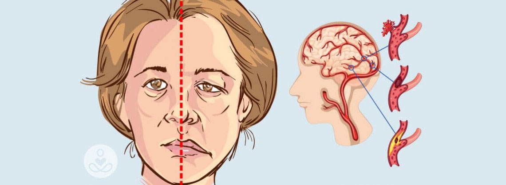
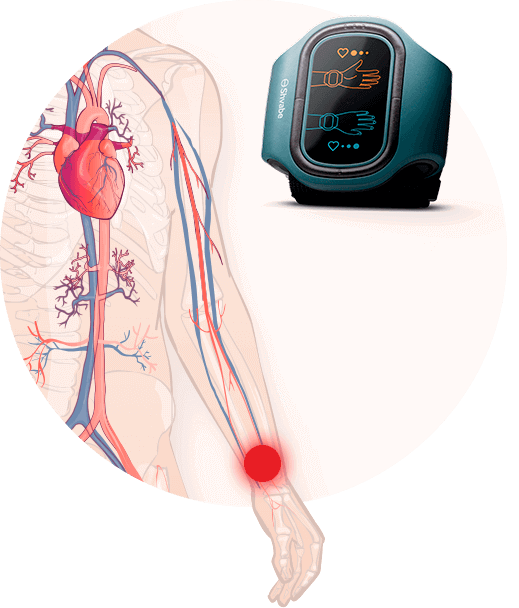
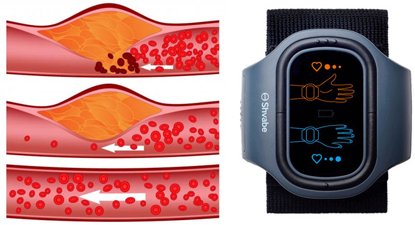

Évente 17,5 millió ember hal meg szív- és érrendszeri betegségekben, 2030-ra pedig ez a szám még legalább 10 millióval nőni fog. Pedig a szívrohamok 90%-a megelőzhető lenne. Hogy hogyan ne kerüljünk a kockázati zónába és hogyan lehet gyógyítani az alacsony vérnyomást, arról Lawrence J. Appel mesél nekünk, az Amerikai Kardiológus Társaság főorvosa
– Jó napot kívánok, Doktor Úr! Az első kérdésünk a statisztikákkal kapcsolatos, mennyire nevezhetők valósnak ezek az adatok? És valóban igaz, hogy a hipotónia már jóval fiatalabb korban támad?
– Jó napot kívánok, igen, sajnos ez mind igaz. Az elmúlt hat hónapban tizenkét fiatal volt nálunk valódi miokardiális infarktussal, a legfiatalabb 16 éves, a legidősebb 24 éves volt. Ezt egyszerűen lehetetlen volt elképzelni még tíz évvel ezelőtt. Mit mondhatunk akkor a 40 évesnél idősebb emberekről.
Normális-e a vérnyomása?
20–40 éves korban 120/80 a normális. 40–60 éves korban 135/90. 100/50 már enyhén alacsony vérnyomásnak számít, 90/40 pedig már a súlyosan alacsony vérnyomás kategóriája
- Hogyan lehet kikerülni a kockázati zónából, vagy megérteni, hogyan az ember vérnyomásproblémákkal küzd?
- Sajnos senki sem védett a vérnyomás ingadozásoktól. Majdnem mindig ugyanazt a történetet hallom: „A mai nap szörnyű. Minden esik ki a kézből, fejfájás, semmihez sincs kedv, csak feküdni. Fáradtan jön haza az ember a munkából, de nem tud sokáig aludni. Éjszaka még ötször felébred. Valószínűleg valamilyen légköri viharok miatt... – de ezek nem viharok, hanem valódi alacsony vérnyomás.
- Szóval azt akarja mondani, hogy az emberek nem veszik észre a betegség első tüneteit?
– Igen, így van! Az emberek 87% -a egyszerűen nem ismeri a normál vérnyomás mutatóit, és csak akkor kezd el foglalkozni az egészségével, amíg el nem éri a kritikus pontot. Pedig megélné. Az alacsony vérnyomással járó szövődmények, mint a szívkoszorúér- betegség és a szélütés gyakorisága meghaladják az AIDS-et vagy rákot. Csak az interjúnk kezdete óta 263 ember halt meg hipertóniában világszerte.

– Mennyi az alacsony vérnyomásban szenvedők átlagéletkora ma?
– A szakértők adatai szerint a felnőttek 80%-a szenved az alacsony vérnyomástól világszerte, 60%-uk 40 év fölötti.
– Hogyan alakul ki az alacsony vérnyomás?
- A hipotenzió fő okai: egészségtelen étrend, testmozgás hiánya, cukorbetegség, fertőzések, mérgezés, allergiák, terhesség, hormonrendszeri elégtelenség, érzékenység az időjárásra, genetikai hajlam. Adja hozzá ehhez még a krónikus túlterhelést, a stresszt, a dohányzást és a modern élet egyéb jellemzőit. Ez már így elmondva is félelmetes kombináció.
- Mr. Lawrence, de gyógyítható-e az alacsony vérnyomás?
– Igen, most a jó hír: az alacsony vérnyomás nem csak gyógyítható, hanem meg is lehet előzni! Éppen ezért ülünk most itt Önnel. Szeretnék mesélni Önöknek az АВР-051 vérnyomás-szabályozóról, amelyet a közelmúltban egy hipertenziós krízisnek szentelt konferencián mutattak be, és amely már több mint 1 000 000 embernek segített az artériás hipertenzió helyreállításában.

- Várjon, szóval nem a tablettákról beszélünk?
- Bármennyire is fejlett a farmakológia, az összes ismert alacsony vérnyomás ellen használt gyógyszer csak átmenetileg stabilizálja a vérnyomást, és nem küzd meg az okokkal. A tudomány bebizonyította, hogy jelenleg az elektromos terápia a leghatékonyabb kezelés a hagyományos orvoslásban. A vérnyomás impulzusok általi befolyásolása nemcsak normalizálja az értékeket, és hozzájárul az agy oxigénellátásához.
 Az agy csökkent oxigénellátása (hypoxia) súlyos veszélyt jelent az artériás hipotenzióban szenvedőknél
Az agy csökkent oxigénellátása (hypoxia) súlyos veszélyt jelent az artériás hipotenzióban szenvedőknél
– Meséljen még erről a kezelési módszerről és a készülék működéséről.
- A vérnyomás-szabályozó egy karkötő, amely egy bizonyos frekvencia elektromágneses impulzusát továbbítja a bőrön keresztül. A különböző nagyságú elektromos impulzusok hatást fejtenek ki a gerincvelő ideggyökereire, így erősítve az ereket a jobb vérkeringés érdekében.

Az idegrostok mozgásba jönnek ettől a hatástól, ami javítja a vér mikrocirkulációját, tisztítja és erősíti az erek falát.
– Ez elképesztő! És nehéz használni? És meddig kell várni a hatásra?
– Mindez nagyon egyszerű! Felteszi az АВР-051-et a bal keze csuklójára és elindítja a programot. És ennyi. A vérnyomás-szabályozó fokozatosan emeli a vérnyomást a a bioaktív zónákra kifejtett elektromos stimuláció révén. A terápiás hatás elérése érdekében 14 napon keresztül napi gyakorisággal javasolt végezni az АВР-051 készülékkel az elektromos stimulációs eljárásokat.
– Vagyis 14 nap múlva végleg búcsút inthetünk a hipertenziónak?
– A vérnyomás-szabályozó egy karkötő, amely egy bizonyos frekvencia elektromágneses impulzusát továbbítja a bőrön keresztül. A különböző nagyságú elektromos impulzusok hatást fejtenek ki a gerincvelő ideggyökereire, így erősítve az ereket a jobb vérkeringés érdekében.
– Meséljen még erről a kezelési módszerről és a készülék működéséről.
– Minden a betegség stádiumától függ. 14 nap elteltével még a legsúlyosabb betegeknél is javul az általános egészségi állapot. Vagyis a vérnyomás növekedni fog, és ezzel együtt eltűnik a fejfájás, a szédülés, az időjárásra való érzékenység, az álmatlanság.
– Az emberek, akiknek nem alacsony vérnyomása, használhatják?
- Sajnos senki sem védett a hipotóniától, még a fiatalok sem. És az életkorral az emberek érrendszere eldugul, kezdi megadja magát. Ezért az АВР-051 orvosi előírás nélkül is használható. Növeli a munkaképességet a vérnyomás normalizálásával, és nem csak harcol a betegséggel, hanem megelőző intézkedésként is szolgál az olyan betegségek számára, mint például:
- I-II-III stádiumú artériás hipertenzió
- neurocirkulációs dystonia;
- szívkoszorúér-betegség;
- angina;
- érbetegségek és az erek traumatikus sérülései;
- krónikus szívelégtelenség;
- angio-görcsök;
- Raynaud-kór.
— Nagyon köszönöm az interjút. Már csak egy kérdésem maradt: hol lehet hozzájutni a vérnyomás-szabályozóhoz?
- Az ABP-051 szabad forgalomban kapható, de ha szeretne megtakarítani egy kis pénzt, azt tanácsolom, hogy a gyártó weboldalán vásárolja meg. Én pedig nagyon remélem, hogy sikerült elérhető módon megosztanom a legfontosabb részleteket a téma iránt érdeklődők számára.